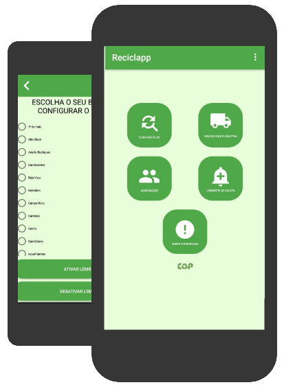

O que reciclar?
Informações para tornar a sua coleta seletiva correta. Diversos materiais são colocados de forma equivocada no lixo reciclável.
Dias de coleta
Consulte os dias e horários em que as coletas seletiva e domiciliar passarão em sua casa.
Associações
A Política Nacional de Resíduos Sólidos incentiva a criação e o desenvolvimento de cooperativas ou outras formas de associação de catadores de materiais reutilizáveis e recicláveis.

Reciclapp
Neste app é possível consultar dados sobre o programa de Extensão Coleta Seletiva Cap, as associações de catadores, a coleta seletiva e sobre os materiais recicláveis e não recicláveis. Também é possivel criar e ativar uma notificação para a coleta seletivaa no seu bairro. Atualmente, atende-se apenas a região de Ouro Branco.